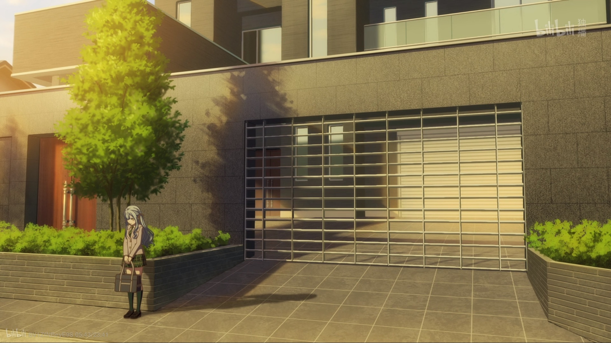
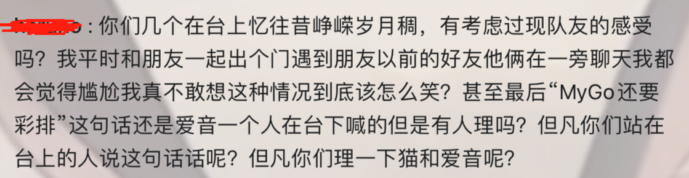
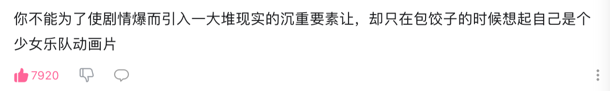

Mujica 第七话杂谈漫笔：情绪渲染缺位所致的失败
《颂乐人偶 Ave Mujica》第七话播出后，其质量引起了广泛的争议和讨论，多数人认为本话的观感体验存在严重的问题。 笔者在本文中主张，第七话内容的最核心问题在于情感渲染的缺位。由于缺乏合格的手段带动观众的情绪， 本应被感性逻辑所淡化的诸多硬伤被迅速放大，联合导致了本话在观感体验上的失败。
在 2 月 13 日 22:00《颂乐人偶》EP7 放送后，其情节观感、人物塑造、音乐演出等诸多方面引发了社区讨论的诸多争议， 对本集质量反感与不满的声音空前的热烈，这一点从 BiliBili 对于本番剧的评分的急剧暴跌可以窥见。于此同时， 对相当一部分特定话题，例如高松灯演唱时的明显走调，爱音在本集中的落寞感的体会也格外的两极分化， 部分观众在本集中受到很深的触动，但更多的人对相同的讨论话题的态度则完全相反。由于对于本集笔者也有良多感触， 所以希冀以本段文字作为契机整理自己在若干社群讨论中的碎片化的感受。本文不是严格的番剧解析、杂谈、对未来走向的预测等特定题材的文章， 仅仅可以算作一个漫笔，因此其中大部分内容都没有严格列出原文依据以及进行规范引用，大多是自己的个人观点、身边统计学和情绪体验。
根据笔者所接触的少量讨论内容，对于 EP7 的差评可能主要集中在如下几个方面：其一，观众可能认为丰川祥子人物形象的塑造非常不尽如人意， 具有高度可疑的“强行洗白”嫌疑；其二，在此之前，作为乐队番，《颂乐人偶》的曲目演奏数目很少，直到本集才出现久违的合奏场面。 然而这一场合奏的音乐表现，特别是演唱的表现具有明显的缺陷。若脱离文本语境，纯粹以音乐鉴赏的评价标准来考察， 高松灯本集的演唱相当不悦耳，听感体验十分令人不适。其三，观众认为千早爱音在本集以及前文中明显受到了剧中角色的冷落， 这导致观众 MyGO 与 Mujica 乐队成员的人物评价普遍呈现负面。其四，本集的主要内容是前 CRYCHIC 的成员终于达成和解， 但和解的实现却相当粗糙，没有花费充分的笔墨展开刻画……除此以外，可能还有相当多其他方面很差劲，无法用以上几点所概括。 以上诸多讨论中，有一部分笔者赞同，也有相当一部分笔者认为属于不必要的苛责或者对文本的误读。笔者主张本集的编剧的意图是符合 MyGO/Mujica 的叙事逻辑的，并且其中有很多细节确实存在巧思。但由于情感渲染的失败，导致本应被情感逻辑所掩盖的问题被曝光和放大， 从而造成严重的观感不佳。
一、 丰川祥子的形象造问题
或许自 MyGO 开播以来，就有相当多的社区讨论集中与丰川祥子的角色评价上。相当一部分观点对她予以负面的人物评价， 并由此衍生出了许多概括性的“黑话”。笔者猜测这些负面的评判在 EP5 中祥子被迫回祖父家“继承家业”集中爆发， 几乎将其性格特质定性为“只想着自己”的实质性自私，而她组乐队的尝试也被几乎被定性为“大小姐过家家”。
笔者并不认为这一种批判是“好”的观赏态度。其一是在 Bang Dream 的世界观中不应当存在纯粹黑白正邪二分法中的反派， 以至于对他的批判总是不会有失偏颇，因此“不笑、不哭、不骂，只是理解”应当是是更合理的人物评价态度。其二是尽管从结果来说， 组乐队成为了“大小姐过家家”的行为，但从结果论来对角色进行武断地定性，会使得导致结果的“过程”的意义被消解， 人物的经历与心理变迁等诸多因素会被忽略，而这些对人物评价来说同样重要。
但另一方面，这并非是在说本集对丰川祥子的形象刻画不存在问题。恰恰相反，对丰川祥子的形象刻画正是本集开始暴露情感叙述问题的开始。 常理来讲，丰川祥子应当存在一个成长的过程，即所谓的人物弧光，经历一个从“只想着自己”到开始直面他人感受的过程。然而在本集中， 这一转变似乎在无人察觉的情况下隐秘地发生了，但如何发生的，以及在这一转变过程中的心路历程，却仅仅只是由祥子哭泣中的自省以及从高松灯的便签收获力量所表达， 除此以外再无其它镜头语言所描写。于是从“睦门立雪”的镜头开始，她的人物形象突然割裂开来，好像在一夜之间完成了从“黑祥”到“白祥”的突变。 “黑祥”与“白祥”本应仅仅是作为区分 CRYCHIC 成员回忆中的形象和现实中的形象而定义的符号，一个完整鲜活的人物不应存在如此割裂 （除非在情节上明确给出类似于若叶睦的多人格设定），但这种突兀的转变却好像坐实了这种区分的正确性一样，这对于我本人的感官体验来说是不可接受的。 因此，突兀的性格转变让“睦门立祥”以后的祥子就像是官方发生 ooc 现象一样。（脚注：本段感悟受益于动漫社的讨论，在其中有群友提及“本集最大的问题是缺少对祥子的心理描写”）。

二、 CRYCHIC 成员和解中情感渲染的缺位
本集主要所推进的主线，是让 CRYCHIC 的成员为过去的误会与隔阂和解。在第一季《迷途之子》中，EP10《诗超绊》的演奏与此处具有类似的作用， 那里的演奏标志着 MyGO 乐队的成员们不再各怀鬼胎，而是作为即便有所私心也能够作为一个整体共同前进的开端。而本集的演奏应当预期标志着 CRYCHIC 成员们完成了和解，并且正式放下了这个过去的乐队。但很明显，本集的表现效果和 MyGO 第十话的表现有着天壤之别。
有 up 主已经提到[注]，MyGO/Mujica 的情节发展逻辑是遵循感性逻辑的， 它将感性的因果驾于理性的因果之上，情节发展相比于依赖于理性逻辑上的环环相扣，更多的是依靠人物情感的变化来驱动和推进（引自满分帅解读 MyGO）。 换言之，如果情绪的渲染是足够到位的，那么牺牲一部分现实逻辑将会是无关紧要的，不会影响整体的观感。事实上，诗超绊的演绎中浪漫色彩相对更为浓厚， 毕竟在现实生活中人际关系的矛盾，应当鲜少以“诗朗诵”和一首合奏作为契机得以缓和与解决。但由于《诗超绊》演绎很好地引导了观众的情绪， 使得现实逻辑的破缺被完美地掩盖。笔者认为，如果一部作品能兼顾感性逻辑和理性逻辑是最好的，但牺牲一部分理性逻辑却很完美地调动观众的情感， 在感性逻辑上足够合理，那么过分细究情节是否符合实际，是否在现实逻辑上无矛盾就是没有必要的。
[注] 年度动漫？语文老师解读《MyGo》：扭曲的背后是什么？
Mujica 第七话似乎也想用类似的手段，用一场演奏的方式为 CRYCHIC 献上一曲葬歌，为 CRYCHIC 的过往做一个体面的告别。但问题在于情感体验上， 编剧几乎没有实现观众和角色情感上的共鸣。《诗超绊》的演绎中，编剧极其巧思地给出了这首曲子的创作历程，用 MyGO 成员一个一个地回归合奏的桥段， 引导观众逐渐接近积压的情绪的发泄口，并最终在高松灯的念白结束后的第一句唱词中情绪达到顶峰。但 Mujica 中并没有类似的巧思， 乐队的和解似乎仅仅是通过几个成员之间简单的对话，在接近和解时由爱音给出了一个乐队合奏的机会，然后在众人的哭泣中和跑调的人声中迎来真正的谢幕。 在《诗超绊》的演绎中，笔者能感觉随着叙述的铺展，自己的情绪是被带动的。然而在本集中，笔者自始至终都认为是一个彻底的局外人， 没有特别的镜头语言和背景音乐来带动观者的感情与 CRYCHIC 众人的情感脉络共鸣。
因此，当全程以旁观者的视角来观赏这场演出时，原本应当被情感渲染所掩盖的理性逻辑问题，就立刻被曝光和放大。其一， CRYCHIC 众人的和解立刻变得极为生硬和匪夷所思，理性逻辑视角下“一场合奏就把问题解决了”的粗糙与简陋成为了主要观感。 祥子的形象割裂和 Mortis 人格的缺位问题也立刻被放大，成为本集观看体验中相当不适的一根刺。其二，高松灯演唱的走调不再具有情感逻辑上的加持。 笔者猜测演唱的走调是为了凸显 CRYCHIC 久违的合奏，以及作为最后谢幕的演唱时带给众人情绪上的波动，如果观众能够完全代入高松灯的情感或者 CRYCHIC 其它成员此刻的心境，这种走调或许也可以成为另一种别样解读相当漂亮的注脚。但很遗憾的是，由于情感渲染上的缺位， 笔者完全无法实现和本集角色的共情，这导致对于演奏的聆听亦不再受到此刻文本语境的加持，变成了纯粹的音乐鉴赏。而从纯粹的音乐鉴赏来看， 演奏的难听是无可回避的事实，任何人都不应否认——因为设计上就是想要难听。
最后，这一场演奏理应作为 CRYCHIC 的葬礼，但生硬的情绪和莫名其妙的落泪，让笔者无法分辨本次演奏和《诗超绊》演奏目的上的差别， 就好像 CRYCHIC 的演奏也将成为乐队重组的开端一样。而一旦这一出现了这一幻觉，对千早爱音在角色关系上处境的认知就会变成第一季 EP9 及以前的情况一样：高度可能被 CRYCHIC 成员随时抛弃和遗忘。这一情感走向一定并非编剧的意图，也不合剧情发展到此刻 MyGO 乐队的情感连结， 但 CRYCHIC 演奏的两首曲目——《想成为人类之歌》和《春日影》——的“葬歌”属性的失真，放大了这一幻觉。于是爱音在本集中的言语举动， 又反过来造成了观众对 CRYCHIC 成员的负面印象。

三、 对千早爱音本集中“落寞”形象的辨析与阐释
社群讨论中，有相当多讨论者表达了对于 CRYCHIC 成员“忽视了爱音的感受”的不满，这可以从短时间内高速涌现的与千早爱音相关的梗图中 （例如本文封面）得以体现。不过笔者个人认为这一呼喊其实是没有必要的。从第一季以来爱音就几乎算是 CRYCHIC 的半个参与者， 她很了解 CRYCHIC 乐队对于自己的伙伴们非凡的意义，此刻她并不处于第一季一开始时对 CRYCHIC 往事完全不知情的状态。 本来这次彩排属于 MyGO 乐队的，原先 CRYCHIC 的众人大概也没有想过在这一刻将灯改写的歌词再次弹奏出来。作为半个 C 团的见证者和 MyGO 成员们亲密的伙伴，她应当是看出来了 CRYCHIC 的成员此刻情绪已经到位。于是出于自己的想法，她认为 CRYCHIC 的成员需要一场最后的合奏。 所以她笑着叹了一口气，将自己的吉他交给了若叶睦，给予了她们奏响 CRYCHIC 最后的葬歌的机会。与其说 CRYCHIC 的演奏看上去是冷落了爱音， 倒不如说这反过来塑造了爱音的性格。让出吉他的决定，甚至可以认为恰好是爱音的一次高光。
但尽管如此，为何相当多的讨论都认为爱音受到了冷落呢？显然不能苛责有相当规模的观者的阅读理解能力，而是应当重新考虑情节的叙述上是否出现严重的问题， 导致出现了如此大规模的“幻觉”。笔者认为前一段所指出的问题，即情感渲染的缺失，依然难逃此咎。正如前面所指出的那样，作为 CRYCHIC 的葬礼的演奏， 却无法让观众体会到“告别”的情绪。这一情绪的缺位会放大“在应当描述 Mujica 乐队的番剧中，MyGO 乐队中老 C 团的成员，和祥子与睦， 以明明已经解散了的 CRYCHIC 的身份演奏了乐曲”这一事实的吊诡感。而观众此刻已无法和 CRYCHIC 的成员共情，在这种吊诡感的加持下， 会在忽略“爱音发起了 CRYCHIC 演奏”的事实的基础上代入爱音的角色。而一旦 MyGO 成员已经心意相通的前提被忽略， 这时代入的体验自然就不会是“看着自己的朋友们终于和过去和解”的欣慰，而是“自己的朋友在和以前的朋友玩的很爽，自己却无法融入”的嫉妒和落寞。
总结而言，本集似乎是想仿照《诗超绊》，以一场演奏的方式来达成 CRYCHIC 成员的和解，从而在作为 Mujica 的“前方失利”的基础上， 至少先将 CRYCHIC 的过往这一“后院之火”给扑灭。然而，这一集编剧几乎没有做到有效地调动观众的情感与 CRYCHIC 的成员共情， 这使得许多预想中会被情绪所掩盖的问题被曝光了出来，成为了本集观感体验格外恶劣的诱因。除此以外，对于《颂乐人偶》的长线剧情， 还有很多隐患并没有得到解决，例如究竟如何将叙事视角和故事主体拉回 Mujica 乐队本身，Mujica 其他成员的塑造目前仍然有所缺失， 并且这一缺失正不断地拉高观众对于后续剧情的期待，一旦期待落空，那么观看体验就会更加惨烈。不过这些问题笔者无意多做研究与讨论， 本文讨论仅限于这一集的镜头表现。最后，应当以一个笔者认为最贴切的批评作为收尾：
